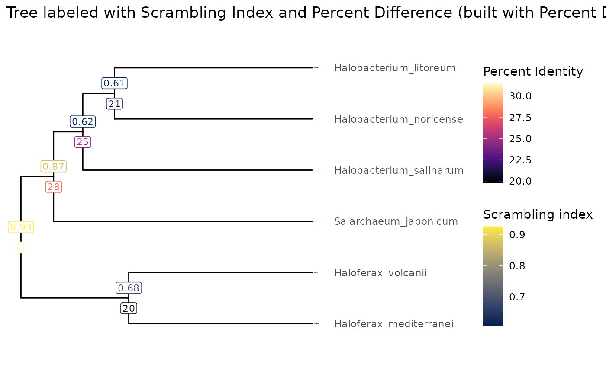
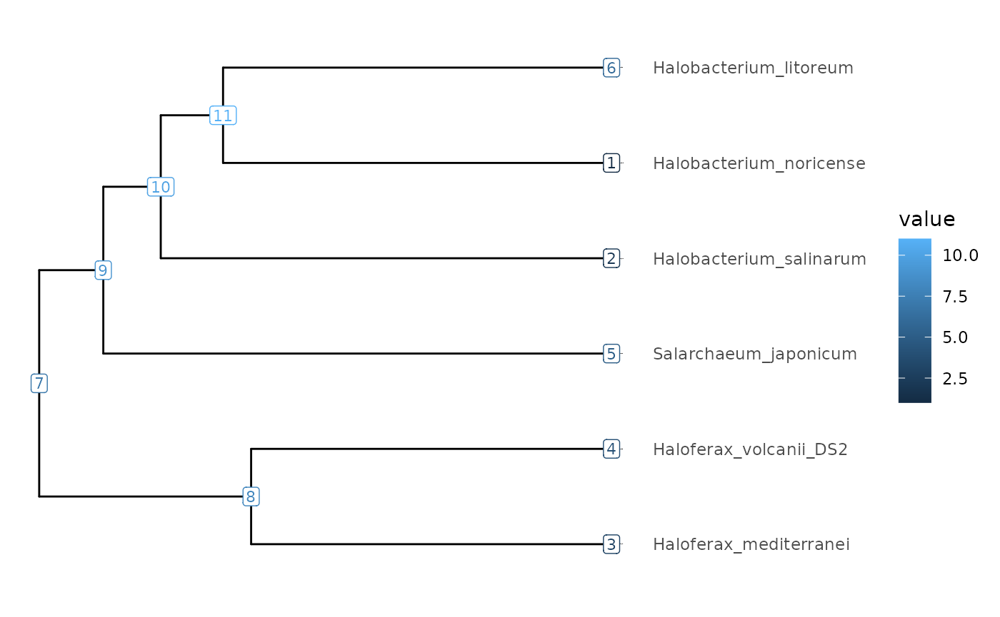

knitr::opts_chunk$set(cache = TRUE)
knitr::opts_knit$set(verbose = TRUE)Introduction
The ScrambledTreeBuilder package consists of numerous data formatting functions for phylogenetic tree building in the context of the (still internal) Scrambling in the Tree of Life project.
Load Package
The ScrambledTreeBuilder package ouptuts plots in ggplot2 format but you need to load the ggplot2 package to further customize them.
Example Data
This package utilizes example .yaml files containing
summary statistics of halobacteria genome comparison data. In regards to
genome scrambling, many studies have showcased significant genome
rearrangments in such halobacteria species due to dozens of insertion
sequence families.
The YAML summary files are produced by performing an all vs. all
genome comparison between six halobacteria species using the Nextflow genome
pairwise alignment pipeline and an input
file script for GenomicBreaks. They are
stored in a directory called ‘extdata/PairwiseComparisons’. Here we
prepare an object called ‘yamlFileData’ that contains the path to the
files. The file names are constructed by taking the name of one species
taken as reference, adding a separator (___), and then the
name of one species being compared to the reference.
resultsDir <- system.file("extdata/PairwiseComparisons", package = "ScrambledTreeBuilder")
yamlFileData <- list.files(resultsDir, pattern = "*.yaml.bz2", full.names = TRUE)
names(yamlFileData) <- yamlFileData |> basename() |> sub(pat = ".yaml.bz2", rep="")
head(names(yamlFileData))
#> [1] "Halobacterium_litoreum___Halobacterium_noricense"
#> [2] "Halobacterium_litoreum___Halobacterium_salinarum"
#> [3] "Halobacterium_litoreum___Haloferax_mediterranei_ATCC_33500"
#> [4] "Halobacterium_litoreum___Haloferax_volcanii_DS2"
#> [5] "Halobacterium_litoreum___Salarchaeum_japonicum"
#> [6] "Halobacterium_noricense___Halobacterium_litoreum"Next, we use the ‘formatStats()’ function to load the YAML files into a single dataframe where each line is a pair of species and each column is a statistic or a metadata about that species comparison.
exDataFrame <- formatStats(yamlFileData)Then, for statistics of interest, we build square matrices where rows and columns indicate one species, and the cells at each intersection contain the value for that pair.
We perform this task with the ‘makeMatrix()’ function. It provide defaults for missing values and self-comparisons.
# Average nucleotide identity. We will use it to cluster a tree.
(treeMatrix <- makeMatrix(exDataFrame, "percent_identity_global", 100, 50))
#> Halobacterium_noricense
#> Halobacterium_noricense 100.00000
#> Halobacterium_salinarum 74.94759
#> Haloferax_mediterranei_ATCC_33500 66.42841
#> Haloferax_volcanii_DS2 69.93183
#> Salarchaeum_japonicum 72.11068
#> Halobacterium_litoreum 78.81199
#> Halobacterium_salinarum
#> Halobacterium_noricense 74.94623
#> Halobacterium_salinarum 100.00000
#> Haloferax_mediterranei_ATCC_33500 66.97889
#> Haloferax_volcanii_DS2 68.48311
#> Salarchaeum_japonicum 71.80855
#> Halobacterium_litoreum 75.75208
#> Haloferax_mediterranei_ATCC_33500
#> Halobacterium_noricense 68.45333
#> Halobacterium_salinarum 67.00552
#> Haloferax_mediterranei_ATCC_33500 100.00000
#> Haloferax_volcanii_DS2 80.39441
#> Salarchaeum_japonicum 68.65929
#> Halobacterium_litoreum 68.72077
#> Haloferax_volcanii_DS2 Salarchaeum_japonicum
#> Halobacterium_noricense 69.96147 72.42201
#> Halobacterium_salinarum 68.48878 71.55815
#> Haloferax_mediterranei_ATCC_33500 80.22559 68.41933
#> Haloferax_volcanii_DS2 100.00000 69.79642
#> Salarchaeum_japonicum 69.82446 100.00000
#> Halobacterium_litoreum 70.16293 72.74950
#> Halobacterium_litoreum
#> Halobacterium_noricense 78.73936
#> Halobacterium_salinarum 75.84298
#> Haloferax_mediterranei_ATCC_33500 68.27405
#> Haloferax_volcanii_DS2 70.11358
#> Salarchaeum_japonicum 72.75352
#> Halobacterium_litoreum 100.00000
# Strand randomisation index.
(valueMatrix <- makeMatrix(exDataFrame, "index_avg_strandRand", 1, 0.5))
#> Halobacterium_noricense
#> Halobacterium_noricense 1.00000000
#> Halobacterium_salinarum 0.23236975
#> Haloferax_mediterranei_ATCC_33500 0.07235525
#> Haloferax_volcanii_DS2 0.05324080
#> Salarchaeum_japonicum 0.13308910
#> Halobacterium_litoreum 0.39458005
#> Halobacterium_salinarum
#> Halobacterium_noricense 0.23325365
#> Halobacterium_salinarum 1.00000000
#> Haloferax_mediterranei_ATCC_33500 0.07435565
#> Haloferax_volcanii_DS2 0.12659775
#> Salarchaeum_japonicum 0.07810210
#> Halobacterium_litoreum 0.53375310
#> Haloferax_mediterranei_ATCC_33500
#> Halobacterium_noricense 0.07203045
#> Halobacterium_salinarum 0.07326215
#> Haloferax_mediterranei_ATCC_33500 1.00000000
#> Haloferax_volcanii_DS2 0.31779245
#> Salarchaeum_japonicum 0.10685560
#> Halobacterium_litoreum 0.07664500
#> Haloferax_volcanii_DS2 Salarchaeum_japonicum
#> Halobacterium_noricense 0.05398890 0.13300580
#> Halobacterium_salinarum 0.12422790 0.07897470
#> Haloferax_mediterranei_ATCC_33500 0.31721145 0.10753295
#> Haloferax_volcanii_DS2 1.00000000 0.01033135
#> Salarchaeum_japonicum 0.00958875 1.00000000
#> Halobacterium_litoreum 0.06412845 0.18808275
#> Halobacterium_litoreum
#> Halobacterium_noricense 0.39265650
#> Halobacterium_salinarum 0.53228275
#> Haloferax_mediterranei_ATCC_33500 0.08363770
#> Haloferax_volcanii_DS2 0.06379615
#> Salarchaeum_japonicum 0.18078755
#> Halobacterium_litoreum 1.00000000We cluster the average nucleotide identity matrix
(treeMatrix) to produce a tree in tibble format,
using the makeTidyTree() funciton. Then we add other
statistics, here the strand randomisation index and the average
nucleotide identity, to this object using the
makeValueTibble function.
# Let's average the target-query and query-target replicate pairs.
(Tibble <- makeTidyTree(100 - (treeMatrix/2 + t(treeMatrix)/2)))
#> # A tbl_tree abstraction: 11 × 4
#> # which can be converted to treedata or phylo
#> # via as.treedata or as.phylo
#> parent node branch.length label
#> <int> <int> <dbl> <chr>
#> 1 11 1 10.6 Halobacterium_noricense
#> 2 10 2 12.3 Halobacterium_salinarum
#> 3 8 3 9.85 Haloferax_mediterranei_ATCC_33500
#> 4 8 4 9.85 Haloferax_volcanii_DS2
#> 5 9 5 13.9 Salarchaeum_japonicum
#> 6 11 6 10.6 Halobacterium_litoreum
#> 7 7 7 NA NA
#> 8 7 8 5.79 NA
#> 9 7 9 1.75 NA
#> 10 9 10 1.57 NA
#> 11 10 11 1.70 NA
(tibbleWithValue <- makeValueTibble(Tibble, valueMatrix, colname = "Strand_Randomisation_Index"))
#> # A tbl_tree abstraction: 11 × 5
#> # which can be converted to treedata or phylo
#> # via as.treedata or as.phylo
#> parent node branch.length label Strand_Randomisation…¹
#> <int> <int> <dbl> <chr> <dbl>
#> 1 11 1 10.6 Halobacterium_noricense NA
#> 2 10 2 12.3 Halobacterium_salinarum NA
#> 3 8 3 9.85 Haloferax_mediterranei_ATC… NA
#> 4 8 4 9.85 Haloferax_volcanii_DS2 NA
#> 5 9 5 13.9 Salarchaeum_japonicum NA
#> 6 11 6 10.6 Halobacterium_litoreum NA
#> 7 7 7 NA NA 0.0740
#> 8 7 8 5.79 NA 0.317
#> 9 7 9 1.75 NA 0.131
#> 10 9 10 1.57 NA 0.382
#> 11 10 11 1.70 NA 0.393
#> # ℹ abbreviated name: ¹Strand_Randomisation_Index
(tibbleWithMultipleValues <- makeValueTibble(tibbleWithValue, treeMatrix, colname = "Percent_Identity"))
#> # A tbl_tree abstraction: 11 × 6
#> # which can be converted to treedata or phylo
#> # via as.treedata or as.phylo
#> parent node branch.length label Strand_Randomisation…¹ Percent_Identity
#> <int> <int> <dbl> <chr> <dbl> <dbl>
#> 1 11 1 10.6 Halobacte… NA NA
#> 2 10 2 12.3 Halobacte… NA NA
#> 3 8 3 9.85 Haloferax… NA NA
#> 4 8 4 9.85 Haloferax… NA NA
#> 5 9 5 13.9 Salarchae… NA NA
#> 6 11 6 10.6 Halobacte… NA NA
#> 7 7 7 NA NA 0.0740 68.6
#> 8 7 8 5.79 NA 0.317 80.2
#> 9 7 9 1.75 NA 0.131 72.2
#> 10 9 10 1.57 NA 0.382 75.4
#> 11 10 11 1.70 NA 0.393 78.7
#> # ℹ abbreviated name: ¹Strand_Randomisation_IndexWe made multiple tables to show the step-by-step process, but typically one would just keep the last table. This can be done with pipes.
makeTidyTree(100 - (treeMatrix/2 + t(treeMatrix)/2)) |>
makeValueTibble(valueMatrix, colname = "Strand_Randomisation_Index") |>
makeValueTibble(treeMatrix, colname = "Percent_Identity")
#> # A tbl_tree abstraction: 11 × 6
#> # which can be converted to treedata or phylo
#> # via as.treedata or as.phylo
#> parent node branch.length label Strand_Randomisation…¹ Percent_Identity
#> <int> <int> <dbl> <chr> <dbl> <dbl>
#> 1 11 1 10.6 Halobacte… NA NA
#> 2 10 2 12.3 Halobacte… NA NA
#> 3 8 3 9.85 Haloferax… NA NA
#> 4 8 4 9.85 Haloferax… NA NA
#> 5 9 5 13.9 Salarchae… NA NA
#> 6 11 6 10.6 Halobacte… NA NA
#> 7 7 7 NA NA 0.0740 68.6
#> 8 7 8 5.79 NA 0.317 80.2
#> 9 7 9 1.75 NA 0.131 72.2
#> 10 9 10 1.57 NA 0.382 75.4
#> 11 10 11 1.70 NA 0.393 78.7
#> # ℹ abbreviated name: ¹Strand_Randomisation_Index
# Same resultPlot trees
Let’s use the tibbleWithMultipleValues object to plot
trees. In our case, we have generated a tree built based on 100 minus
percent identity values as a distance, and computed average strand
randomisation scores for all the nodes. We can plot these values as
labels on the tree.
visualizeTree(tibbleWithMultipleValues, tibbleWithMultipleValues$Strand_Randomisation_Index) +
ggplot2::ggtitle(paste("Tree built with Percent Identity and labelled with Strand Randomisation Index scores")) +
ggtree::geom_hilight(node = 8, fill = "lightblue1", alpha = .4, type = "gradient", gradient.direction = 'tr') +
ggtree::geom_hilight(node = 9, fill = "pink", alpha = .4, type = "gradient", gradient.direction = 'tr')
#> Scale for y is already present.
#> Adding another scale for y, which will replace the existing scale.
visualizeTree(tibbleWithMultipleValues, tibbleWithMultipleValues$Strand_Randomisation_Index, ynudge = 0.2) +
ggplot2::ggtitle("Tree labeled with Strand Randomisation Index and Percent Identity (built with Percent Identity)") +
ggplot2::scale_color_viridis_c(name = "Strand Randomisation Index", option = "cividis") +
ggnewscale::new_scale_colour() +
ggtree::geom_label(ggtree::aes(label=round(Percent_Identity, digits = 3), color = Percent_Identity), label.size = 0.25, size = 3, na.rm = TRUE, label.padding = ggtree::unit(0.15, "lines"), nudge_y = -0.2) +
viridis::scale_color_viridis(option = "magma", name = "Percent Identity")
#> Scale for y is already present.
#> Adding another scale for y, which will replace the existing scale.
Of course, if you spotted an interesting sub-tree, you can plot the node IDs to easily extract it for further analysis.
visualizeTree(tibbleWithMultipleValues)
#> Scale for y is already present.
#> Adding another scale for y, which will replace the existing scale.
The subTree function can conveniently be used with R’s
pipe operator to cut a sub-tree at a chosen node.
visualizeTree(tibbleWithMultipleValues |> subTree(node = 9), "Percent_Identity")
#> Scale for y is already present.
#> Adding another scale for y, which will replace the existing scale.
subMatrix(Tibble, valueMatrix, 9, simpl=TRUE)
#> H_noricense H_salinarum S_japonicum H_litoreum
#> H_noricense 1.0000000 0.2332537 0.1330058 0.3926565
#> H_salinarum 0.2323697 1.0000000 0.0789747 0.5322828
#> S_japonicum 0.1330891 0.0781021 1.0000000 0.1807875
#> H_litoreum 0.3945801 0.5337531 0.1880827 1.0000000Plot node and leaf values
We can also plot leaf and node values in a standard scatterplot.
plot(exDataFrame$percent_identity_global, exDataFrame$index_avg_strandRand, col = 'grey', xlab = "Percent identity", ylab="Strand randomisation index", main = "Leaf values are in grey and node values in red")
points(tibbleWithMultipleValues$Percent_Identity, tibbleWithMultipleValues$Strand_Randomisation_Index, col = 'red')
plotTwoBranches <- function(tree, node, X, Y, ...) {
children <- tidytree::child (tree, node)
if(nrow(children) != 2) return(invisible())
parent <- tidytree::parent(tree, children$node[1])
lines(
c(parent[, X, drop=T], children[, X, drop=T][1]),
c(parent[, Y, drop=T], children[, Y, drop=T][1]),
...
)
lines(
c(parent[, X, drop=T], children[, X, drop=T][2]),
c(parent[, Y, drop=T], children[, Y, drop=T][2]),
...
)
}
plotAllBranches <- function(tree, X, Y, ... ) {
unique(tree$parent) |> sort() |> sapply(\(node) {
plotTwoBranches(tree, node, X, Y, ...)
})
return(invisible())
}
plotAllBranches(tibbleWithMultipleValues, "Percent_Identity", "Strand_Randomisation_Index", col = "red")